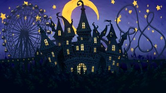

- Welcome to Touhou Wiki!
- Please register to edit. For assistance, check in with our Discord server or IRC channel.
Dream World
Dream World jɯᵝme̞ no̞ se̞ka̠i | |
|---|---|
|
 An amusement park in the Dream World in Antinomy of Common Flowers
| |
| Location |
Unknown |
| Residents | |
Appearances | |
| Official Games | |
| |
The Dream World (夢の世界 Yume no Sekai) is a world that is visited via dreaming, and is ruled by Doremy Sweet.
General Information[edit]
The Dream World is normally accessed via dreams, where the dreamer exists as their "dream self".
In Legacy of Lunatic Kingdom, the Dream World is mysteriously accessed physically through a secret passageway that Reisen Udongein Inaba calls "Kaian Passageway #4 (第四槐安通路)", and is said to be used as a method of travel between the Lunar Capital and Gensokyo by the moon rabbits[1]. The passageway seems to resemble outer space somewhat, as Sanae Kochiya exclaims "I'm flying through space!", and both the Moon and the Earth are visible, seen in Stage 3 and the Extra Stage respectively.
There is no information suggesting the Fantasy World (夢幻世界) in Lotus Land Story, the World of Fantasies (幻夢界) in Story of Eastern Wonderland, or Mugetsu's world, are at all related.
Appearances[edit]
- Legacy of Lunatic Kingdom
Prior to the game's events, ordered by Sagume Kishin, Doremy Sweet creates a fake Lunar Capital within the Dream World that the residents of the Lunar Capital temporarily live in while the Hell fairies run rampant on the Moon.
After Ringo's defeat, she tells the heroine to go through the secret passageway in the Dream World to get to the Lunar Capital. They are stopped by Doremy, who is surprised to find they are in their physical body while in a dream, and ultimately allows them to get the true Lunar Capital instead of the fake one, contrary to Sagume's instruction.
- Antinomy of Common Flowers
The "Perfect Possession" phenomenon is affecting the Dream World and its inhabitants are being expelled into the real world. Also because of this phenomenon, Sumireko Usami is stuck in the Dream World while her dream self is rampaging in the real world. There, she encounters the dream versions of Reimu Hakurei and Marisa Kirisame and interact with Doremy Sweet who was keeping an eye on her. She is finally freed from the dream world by Yukari Yakumo, who was trying to put a stop to the rampage of Sumireko's dream self.
- Violet Detector
The whole premise of Violet Detector happens in the Dream World. The dream dwellers are ganging up against Sumireko Usami's dream self, jealous that one of them is able to have a flesh in the real world.
Gallery[edit]
The Dream World on Stage 3 in Legacy of Lunatic Kingdom

The Dream World with the Moon in Legacy of Lunatic Kingdom
The Dream World in the Extra Stage ofLegacy of Lunatic Kingdom
The Dream World with Earth visible in the Extra Stage of Legacy of Lunatic Kingdom
Additional Information[edit]
- In Legacy of Lunatic Kingdom, there appears to be flying yin-yangs and Makai-types of fairies and sunflower fairies also flying around this world. ZUN states that these are "just things in each dream," but are still mischievous of them to spread barrages of danmaku despite being in a dream.
- It is the third time a sort of dream world was used as the stage 3 of a particular game, the other two coming from Lotus Land Story and Story of Eastern Wonderland.